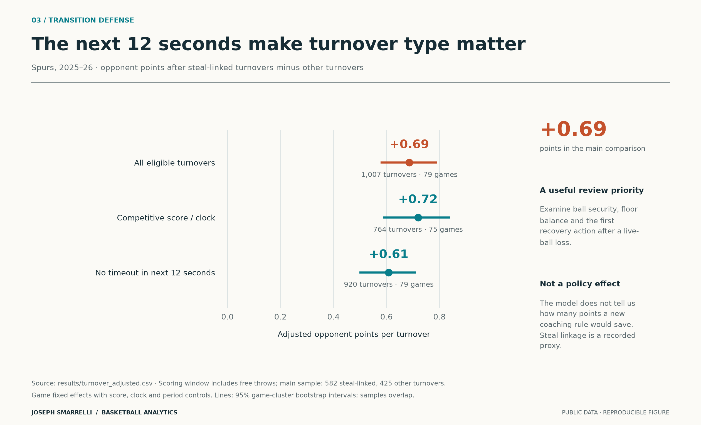

Spurs game-management studies
Read the basketball decision brief · Visual design and rebuild
Joseph Smarrelli · September 2026
Three completed studies of San Antonio’s 2025–26 regular season. Each starts with a coaching question and carries it through source checks, an explicit comparison, uncertainty and a finished article.
| Project | Main result | Methods |
|---|---|---|
| The 12 seconds after a Spurs turnover | Turnovers linked to a steal were followed by 0.69 more opponent points over 12 seconds after adjustment. | Score-window extraction, game fixed effects, cluster bootstrap |
| After the timeout: a matched Spurs review | Both matched groups rebounded from a scoring dip; the next-minute comparison did not establish a timeout advantage. | Within-game matching, balance diagnostics, sensitivity analysis |
| The Spurs’ last 40 seconds of a quarter | Earlier shots were more often followed by a return attempt; the later-sample forecasting gain remained uncertain. | Event sequencing, regularized logistic regression, chronological validation |

Includes nine PNG/SVG figures, three research articles and a decision brief in standalone HTML, three executed notebooks, Python source, SQL and derived records. These studies use public records only.
Reproduce
Python 3.12 was used for the delivered run. From the repository root:
python -m venv .venv
source .venv/bin/activate
python -m pip install -r requirements.txt
python -m src.run_all --fetch
python -m unittest discover -s tests -v
python -m src.notebooks
On Windows, activate .venv\Scripts\activate. The first run needs internet access to retrieve two pinned archives. The downloader verifies their SHA-256 hashes before extraction. Later runs can omit --fetch while those raw inputs remain available. Notebooks execute locally with a Python kernel; no API key is needed.
The derived tables are included, so python -m src.data sql and the tests can run without the raw downloads. Rebuilding the cohorts requires the raw data. Full raw files, local environments, caches and the SQLite working database are excluded from version control.
What is included
reports/: Markdown and self-contained HTML articles.notebooks/: executed calculations and diagnostics, with figures in their outputs.src/: source retrieval, event cohorts, estimators, charts and article export.data/: source manifest and the three derived cohorts.results/: game exclusions, estimates, matched pairs, later predictions and review identifiers.sql/: cohort summaries and ordered decision counts.tests/: event logic, statistical identities, matching and reproduction checks.
Methods and data definitions explain the denominators and decision limits.
Sources and scope
The event and shot-location inputs come from shufinskiy/nba_data, revision e829d4678be1e075f99e5d41a1c5f97089be446b. Dates run from October 22, 2025 through April 12, 2026. Three of 82 Spurs games fail the shared audit, leaving 79. The archive is a third-party preservation of public NBA records; the checks do not amount to independent certification by the NBA.
The code is MIT licensed. NBA data retain their original rights and terms. The source archives are not redistributed in this package, and the code license does not relicense those data.
Current review
See current validation for executed checks and unresolved rebuild requirements, and provenance for AI assistance. Portfolio navigation.